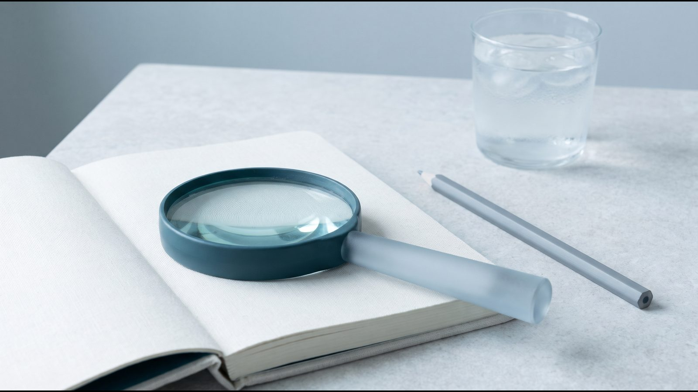

Як зберегти м'язи на Ozempic® і Mounjaro®: нежирова маса, білок і силові тренування

Чи втрачаються м'язи на Ozempic® і Mounjaro®: коротка відповідь
Під час будь-якого схуднення разом із жиром зменшується і нежирова маса, до якої належать м'язи. У піддослідженні SURMOUNT-1 на Mounjaro® (тирзепатид) близько 75 % втраченої ваги припало на жир і 25 % на нежирову масу, і таке саме співвідношення було в групі плацебо. Щоб зберегти м'язи на Ozempic® (семаглутид) і Mounjaro®, спільна рекомендація американських фахових товариств з медицини способу життя, харчування й лікування ожиріння (ACLM, ASN, OMA, TOS, 2025) радить поєднувати достатній білок із силовими тренуваннями щонайменше 3 рази на тиждень. Обсяг навантаження і ціль білка лікар визначає індивідуально.
Нежирова маса і м'язи: у чому різниця
У SURMOUNT-1 і STEP 1 склад тіла вимірювали методом DXA (двоенергетична рентгенівська абсорбціометрія): сканування окремо оцінює жир, кістки і решту тканин. Нежирова маса (lean mass) у DXA означає все, крім жиру й кісток: м'язи, внутрішні органи, воду. За оглядом Mozaffarian et al. (2025), м'язи становлять приблизно половину нежирової маси. Тому «мінус 5 кг нежирової маси» не дорівнює «мінус 5 кг м'язів».
Втрата нежирової маси під час схуднення не є особливістю препаратів GLP-1, тобто ліків, що діють на рецептори гормону GLP-1, який регулює апетит. Автори аналізу SURMOUNT-1 зазначають, що в багатьох дослідженнях обмеження харчування жир дає близько 75 % втраченої ваги, а нежирова маса близько 25 %. EMA в оцінювальному звіті щодо Wegovy® називає втрату нежирової маси звичним явищем під час програми схуднення.
Що показали дослідження SURMOUNT-1 і STEP 1
| Показник | SURMOUNT-1, тирзепатид | STEP 1, семаглутид 2,4 мг |
|---|---|---|
| Учасники піддослідження DXA | 160 дорослих без діабету: 124 на тирзепатиді, 36 на плацебо | 140 учасників із США |
| Тривалість | 72 тижні | 68 тижнів |
| Жирова маса | −33,9 % (плацебо −8,2 %) | −8,4 кг (плацебо −1,4 кг) |
| Нежирова маса | −10,9 % (плацебо −2,6 %) | −5,3 кг (плацебо −1,8 кг) |
| Частка нежирової маси у втраті | близько 25 % | у звіті EMA числом не наведена |
| Джерело | Look et al., Diabetes Obes Metab, 2025 | оцінювальний звіт EMA щодо Wegovy®, 2022 |
У SURMOUNT-1 маса тіла в піддослідженні зменшилася на 21,3 % на тирзепатиді проти 5,3 % на плацебо. STEP 1 вивчав семаглутид у дозі 2,4 мг, тобто препарат Wegovy®, а не Ozempic®, який в Україні зареєстрований для лікування цукрового діабету 2 типу. Усі цифри STEP 1 у цій статті наведено за оцінювальним звітом EMA.
Інструкції EMA для Mounjaro® і Wegovy® роблять однаковий висновок: більша частина втраченої ваги припадає на жир, зокрема вісцеральний (навколо внутрішніх органів). У STEP 1, за даними EMA, частка нежирової маси у складі тіла зросла на 2,94 відсоткового пункту порівняно з плацебо. Досліджень, де склад тіла на тирзепатиді й семаглутиді порівнювали б напряму, серед джерел цієї статті немає, тому дві колонки таблиці не варто зіставляти як рейтинг. Загальні результати досліджень зібрані в статтях Mounjaro® у дослідженнях SURMOUNT і Ozempic® у дослідженнях.
Кому особливо важливо стежити за м'язами
Спільна рекомендація ACLM, ASN, OMA і TOS (2025) радить перед стартом GLP-1 перевіряти ознаки саркопенії (втрати м'язової маси і сили) та остеопенії (зниження щільності кісток), оцінювати м'язову силу і, за можливості, склад тіла. У дослідженні SWAN (JCI Insight, 2019) на початку менопаузального переходу швидкість набору жиру подвоювалася, а нежирова маса зменшувалася. Людям старшого віку ВООЗ (2020) радить багатокомпонентну активність із вправами на рівновагу і силу щонайменше 3 дні на тиждень.
[КОММЕНТАРИЙ ВРАЧА: кому з пацієнтів клініка радить окремо контролювати м'язову масу і силу під час курсу GLP-1]
Білок: скільки радять на GLP-1
Під час активного схуднення спільна рекомендація 2025 року пропонує 1,2–1,6 г білка на кілограм маси тіла на добу. Оскільки при ожирінні розрахунок на фактичну масу може завищити потребу, як альтернативу автори називають 80–120 г на добу або 1,5 г на кілограм нежирової маси. Білкові продукти радять їсти на початку прийому їжі. Але автори прямо пишуть, що один лише білок без структурованих силових тренувань, імовірно, не збереже м'язи.
Як розподілити білок за день і що робити, коли апетиту майже немає, розібрано в статті Харчування на Mounjaro® і Ozempic®.
Силові тренування: скільки і з чого почати
Спільна рекомендація 2025 року радить призначати GLP-1 разом зі структурованою програмою вправ: силові тренування щонайменше 3 рази на тиждень і не менше 150 хвилин аеробного навантаження помірної інтенсивності на тиждень. Загальна рекомендація ВООЗ (2020) для всіх дорослих м'якша: силові вправи помірної або вищої інтенсивності на всі основні групи м'язів щонайменше 2 дні на тиждень і 150–300 хвилин помірної активності.
Приклад тижня з силовими тренуваннями:
- 3 силові тренування, які задіюють усі основні групи м'язів;
- щонайменше 150 хвилин помірного аеробного навантаження, наприклад швидкої ходьби;
- білкові продукти на початку кожного прийому їжі;
- записи в щоденнику: які вправи і скільки повторень, щоб бачити прогрес.
Силові вправи не обов'язково означають спортзал. Якщо у вас хвороби серця, суглобів або хребта, план навантажень спершу обговоріть з лікарем.
Як вимірювати склад тіла і силу
Цифра на терезах не покаже, за рахунок чого змінюється вага. Спільна рекомендація 2025 року пропонує стежити за складом тіла за допомогою біоімпедансного аналізу (BIA, вимірювання слабким електричним струмом) або DXA, а силу перевіряти простими функціональними тестами.
| Метод | Що оцінює | Примітка |
|---|---|---|
| DXA | жир, нежирову масу і кістки окремо | рекомендація 2025 року: раз на рік або раз на 2 роки |
| Біоімпедансний аналіз (BIA) | склад тіла | NICE NG246 не радить використовувати біоімпеданс замість ІМТ |
| Тести сили: вставання зі стільця, підйом сходами, «встань і йди» на час | м'язову силу і функцію | рекомендація 2025 року згадує їх для контролю сили |
| Обхват талії | накопичення жиру на животі | NICE: талія має бути меншою за половину зросту; для ІМТ до 35 |
Співвідношення талії до зросту можна порахувати в калькуляторі ІМТ і талії. Чи потрібні DXA або BIA і як часто, вирішує лікар.
Часті запитання
Чи вся вага, втрачена на GLP-1, це жир?
Ні. У піддослідженні SURMOUNT-1 близько 75 % втраченої ваги припало на жир і 25 % на нежирову масу, так само як і в групі плацебо. У STEP 1 на семаглутиді 2,4 мг жирова маса зменшилася на 8,4 кг, нежирова на 5,3 кг (дані EMA).
Чи можна зберегти м'язи лише за рахунок білка?
Автори спільної рекомендації ACLM, ASN, OMA і TOS (2025) вважають, що одного білка без структурованих силових тренувань, імовірно, замало. Вони радять поєднувати білок із силовими вправами щонайменше 3 рази на тиждень.
Як часто робити DXA на терапії GLP-1?
Рекомендація 2025 року згадує DXA раз на рік або раз на 2 роки, а як альтернативу називає біоімпедансний аналіз. Чи потрібне вимірювання саме вам і коли, вирішує лікар.
На якому препараті м'язів втрачається менше: Mounjaro® чи Ozempic®?
Прямого порівняння складу тіла на тирзепатиді й семаглутиді серед джерел цієї статті немає. Дані SURMOUNT-1 і STEP 1 отримані в різних дослідженнях і подані в різних одиницях, а STEP 1 вивчав семаглутид 2,4 мг (Wegovy®), а не дози Ozempic®. Тому відповісти на це питання за наявними даними не можна.
Що далі
Якщо ви вже отримуєте Ozempic® чи Mounjaro®, обговоріть з лікарем ціль білка, план силових тренувань і спосіб контролю складу тіла. Змінювати дозу чи робити паузи в лікуванні самостійно, щоб «зберегти м'язи», не варто. Суміжні теми: плато на GLP-1 і вага після відміни терапії.
Джерела
- Look M, Dunn JP, Kushner RF et al. Body composition changes during weight reduction with tirzepatide in the SURMOUNT-1 study of adults with obesity or overweight. Diabetes Obes Metab, 2025;27(5):2720–2729. https://doi.org/10.1111/dom.16275
- European Medicines Agency. Wegovy: EPAR Public Assessment Report, EMA/112307/2022 (розділ «Body composition»). https://www.ema.europa.eu/en/documents/assessment-report/wegovy-epar-public-assessment-report_en.pdf
- Wegovy: EPAR Product Information (SmPC, розділ 5.1). European Medicines Agency, 2026. https://www.ema.europa.eu/en/documents/product-information/wegovy-epar-product-information_en.pdf
- Mounjaro: EPAR Product Information (SmPC, розділ 5.1). European Medicines Agency, 2026. https://www.ema.europa.eu/en/documents/product-information/mounjaro-epar-product-information_en.pdf
- Wilding JPH et al. Once-Weekly Semaglutide in Adults with Overweight or Obesity (STEP 1). N Engl J Med, 2021;384:989–1002. https://doi.org/10.1056/NEJMoa2032183
- Mozaffarian D et al. Nutritional priorities to support GLP-1 therapy for obesity: a joint Advisory from ACLM, ASN, OMA and TOS. Am J Clin Nutr, 2025;122(1):344–367. https://pmc.ncbi.nlm.nih.gov/articles/PMC12612741/
- Bull FC et al. World Health Organization 2020 guidelines on physical activity and sedentary behaviour. Br J Sports Med, 2020;54(24):1451–1462. https://doi.org/10.1136/bjsports-2020-102955
- Greendale GA et al. Changes in body composition and weight during the menopause transition (SWAN). JCI Insight, 2019;4(5):e124865. https://doi.org/10.1172/jci.insight.124865
- NICE NG246. Overweight and obesity management: identifying and assessing overweight, obesity and central adiposity, 2025. https://www.nice.org.uk/guidance/ng246/chapter/Identifying-and-assessing-overweight-obesity-and-central-adiposity
- Інструкція для медичного застосування лікарського засобу Оземпік® (РП UA/19176/01/01). МОЗ України. http://www.drlz.com.ua/ibp/lz_www.nsf/id/2D837A4C00C398AB42258E2C00345419/$file/UA191760101_304C.mht
Матеріал має інформаційний характер і не замінює консультацію лікаря. Препарати призначає лікар після консультації.
Читайте також
